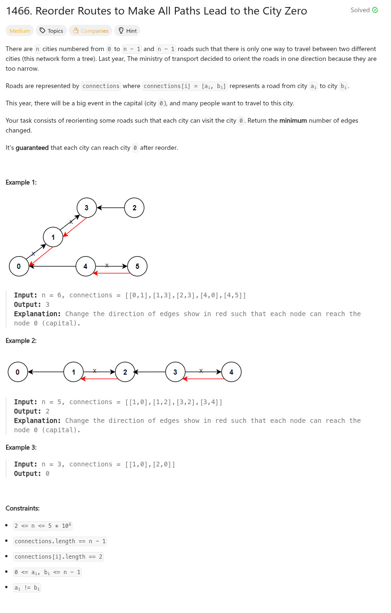

參考資訊：
https://blog.csdn.net/fuxuemingzhu/article/details/106597991
題目：

#define COST 0x80000000
int travel(int **connections, int n, int *visit, int *len, int **cost, int cur)
{
int r = 0;
int c0 = 0;
visit[cur] = 1;
for (c0 = 0; c0 < len[cur]; c0++) {
int dst = cost[cur][c0] & ~COST;
if (visit[dst] == 0) {
r += !!(cost[cur][c0] & COST);
r += travel(connections, n, visit, len, cost, dst);
}
}
return r;
}
int minReorder(int n, int **connections, int connectionsSize, int *connectionsColSize)
{
int c0 = 0;
int **cost = NULL;
int *len = malloc(sizeof(int) * n);
int *visit = malloc(sizeof(int) * n);
memset(len, 0, sizeof(int) * n);
memset(visit, 0, sizeof(int) * n);
for (c0 = 0; c0 < connectionsSize; c0++) {
len[connections[c0][0]] += 1;
len[connections[c0][1]] += 1;
}
cost = malloc(sizeof(int *) * n);
for (c0 = 0; c0 < n; c0++) {
cost[c0] = malloc(sizeof(int) * len[c0]);
}
memset(len, 0, sizeof(int) * n);
for (c0 = 0; c0 < connectionsSize; c0++) {
int src = connections[c0][0];
int dst = connections[c0][1];
cost[src][len[src]++] = dst | COST;
cost[dst][len[dst]++] = src;
}
return travel(connections, n, visit, len, cost, 0);
}